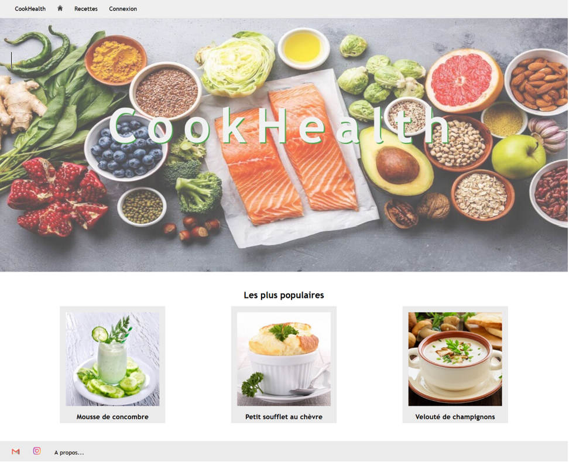

Description générale du projet
Un site internet sur lequel les membres peuvent poster leurs recettes de cuisines préférés et les partager avec le reste de la communauté
Ce projet a été réalisé afin de mettre en pratique les compétences développées dans le cadre de mes cours de DevOps, de Développement WEB et d’Agilité avec la méthode SCRUM.
Nous l'avons réalisé en groupe de quatre sur une période de un mois
Les fonctionnalités
- Un système d'authentification (gestion de l'inscription, de la connexion, de la déconnexion et du changement de mot de passe)
- Un système de gestion des utilisateurs accessibles uniquement par les administrateurs. Permet de créer des comptes, en supprimer et modifier leur rôle
- Un système d'ajout de recette si connecté et possibilité de modification ou de suppression de ses propre recettes
- Un système de recherches basé sur le nom des recettes ou de leurs ingredients
- Un filtrage des pages accessibles et des droits possédés selon le rôle qui est attribué à un utilisateur (droits administrateurs pour la gestion totale des recettes et des utilisateurs ou droits de membre pour la gestion de ses propres recettes ou simple visiteur)
Description technique
- Projet construit avec Maven
- Gestion des logs via LogBack
- Gestion du code source via Git (Gitlab)
- Intégration continue via Gitlab-ci
- Tests unitaires couvrant plus de 90% du code des services et utilisants les technologies suivantes :
- - JUnit
- - AssertJ
- - Mockito